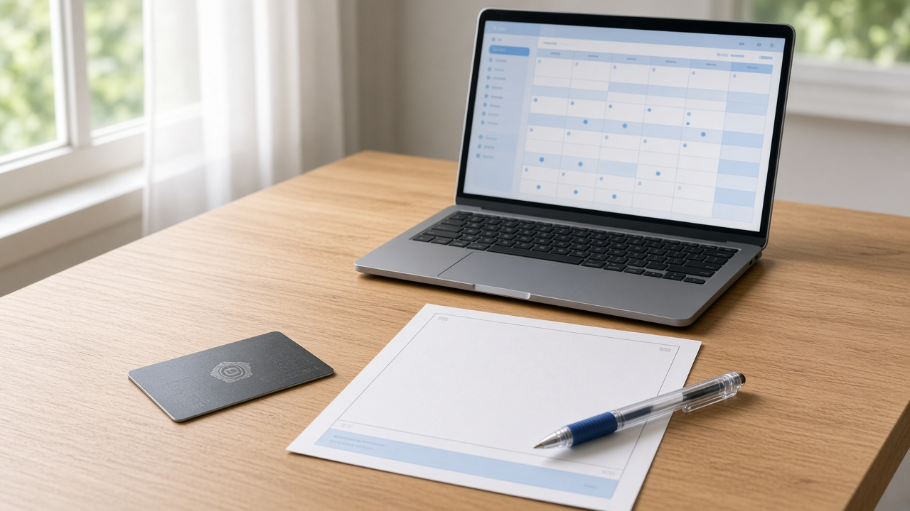
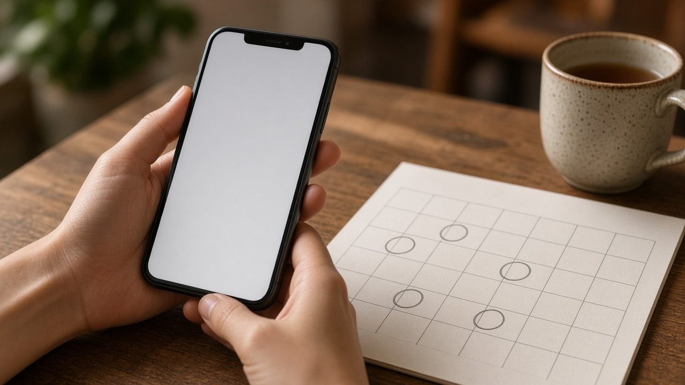

기능사 4회 실기 빈자리 접수는 11월 8일부터예요, 정기접수 놓친 분이 확인할 일정과 환불 규칙

10월에 기능사 실기 원서를 내지 못했거나 원하는 시험장이 마감된 분들은 빈자리 접수 날짜를 따로 적어 두는 편이 좋아요.
11월 7일 기준으로 보면 큐넷 일정에 2026년 정기 기능사 제4회 실기 빈자리 원서접수가 11월 8일과 9일로 안내돼 있어요.
정기접수와 빈자리접수는 날짜도 다르고 환불 규칙도 다르므로, 달력에 취소표만 적어두면 필기 빈자리와 실기 빈자리를 헷갈리기 쉬워요.
언제 열리고, 무엇을 미리 준비하고, 결제와 취소를 어떻게 봐야 하는지 순서대로 정리해 볼게요.
빈자리 접수는 11월 8일 오전 10시부터 9일 오후 6시까지예요
큐넷 종목별 시험일정과 월간 일정 안내를 보면 정기 기능사 제4회 실기 정기 원서접수는 10월 12일부터 15일까지였고, 빈자리 접수는 11월 8일부터 9일까지예요.
원서접수 시간은 첫날 오전 10시부터 마지막 날 오후 6시까지가 기본이에요.
같은 날 기술사 제140회 면접시험 빈자리 접수도 큐넷 달력에 함께 표시되므로, 기능사 실기를 신청하려는 분은 종목과 등급을 한 번 더 확인하세요.
빈자리 접수는 환불로 생긴 잔여 자리를 선착순으로 쓰는 추가 접수예요.
선호하는 일자나 시험장은 조기에 마감될 수 있고, 수험 인원이 매우 적거나 시험 상황에 따라 빈자리 접수를 실시하지 않을 수도 있다고 안내돼 있어요.
정기접수와 빈자리접수는 날짜와 환불 규칙이 달라요
같은 제4회라도 필기 빈자리접수와 실기 빈자리접수는 날짜가 달라요.
필기 빈자리접수는 이미 지난 9월 일정이고, 지금 열리는 것은 실기 빈자리예요.
큐넷 빈자리 접수 안내에는 접수 후 바로 취소하더라도 50퍼센트만 환불된다고 적혀 있어요.
빈자리 접수에서는 가상계좌 결제를 쓸 수 없다고 안내돼 있으니, 카드나 계좌이체처럼 허용된 결제 수단을 미리 준비하세요.
환불 가능 기간이 지나면 취소와 환불이 되지 않으므로, 시험장과 일정을 충분히 본 뒤 결제하는 편이 안전해요.
실기시험은 11월 14일부터 12월 2일까지고, 내 시험일은 수험표를 봐야 해요
큐넷 일정 기준으로 제4회 실기시험 기간은 2026년 11월 14일부터 12월 2일까지예요.
이 기간은 여러 종목이 걸쳐 시행되는 전체 구간이고, 본인이 응시하는 날짜와 입실 시각은 접수 완료 후 수험표에 배정된 내용을 따라야 해요.
전체 기간 중 편한 날을 골라 임의로 방문하는 방식은 아니에요.
최종합격자 발표는 일정표에 12월 11일로 안내된 종목이 있고, 채점 방식에 따라 종목별로 발표일이 나뉠 수 있어요.
접수한 종목명 옆에 개인 시험일과 발표일을 함께 적어 두면 이후 자격증 발급 계획까지 이어 잡기 쉬워요.

접수 전에 확인할 조건과 큐넷에서 보는 순서
실기 원서접수는 접수 시점에 필기 합격 면제 기간이 남아 있어야 해요.
면제 기간은 필기 합격자 발표일부터 2년으로 안내되며, 그 전에 만료되면 실기 접수가 되지 않아요.
신청 경로는 큐넷의 국가자격시험 원서접수 메뉴에서 정기 기능사 제4회 실기와 응시 종목을 고른 뒤, 화면에 남은 시험장과 일정을 선택하고 결제하는 흐름이에요.
접수 후에는 마이페이지의 원서접수 내역에서 상태가 접수완료인지, 수험표 출력이 되는지까지 확인하세요.
미결제 상태로 남아 있으면 접수가 끝난 것이 아니므로, 결제 완료 화면과 수험표 출력을 같은 자리에서 확인하는 편이 좋아요.
지금 바로 확인해 두면 좋은 체크리스트
첫째, 달력에 11월 8일 오전 10시부터 9일 오후 6시까지 기능사 제4회 실기 빈자리 접수를 적어 두세요.
둘째, 응시 종목이 제4회 시행 종목인지와 필기 면제 기간이 남아 있는지 확인하세요.
셋째, 빈자리 접수는 가상계좌를 쓸 수 없고 취소 시 50퍼센트 환불 규칙이 적용된다는 점을 결제 전에 다시 보세요.
넷째, 이동 가능한 시험장 후보를 두세 곳 정해 두고, 작업형 준비물과 도착 시간을 함께 계산하세요.
다섯째, 결제 직후 마이페이지에서 접수완료와 수험표 출력 가능 여부를 확인하세요.
오늘 글은 일반 정보 정리이며 특정 학원이나 대행을 권유하지 않아요. 정확한 시행 종목과 잔여 좌석, 수수료는 접수 당일 큐넷 화면과 한국산업인력공단 안내를 기준으로 확인해 주세요.
참고 자료 큐넷 2026년 11월 월간시험일정, 큐넷 정기 기능사 제4회 종목별 시험일정, 큐넷 빈자리 접수 환불 및 결제 유의사항 안내, 큐넷 원서접수안내 환불기준
태그 기능사 실기시험 빈자리접수 큐넷 한국산업인력공단 기능사4회 원서접수 자격증 국가기술자격 수험표